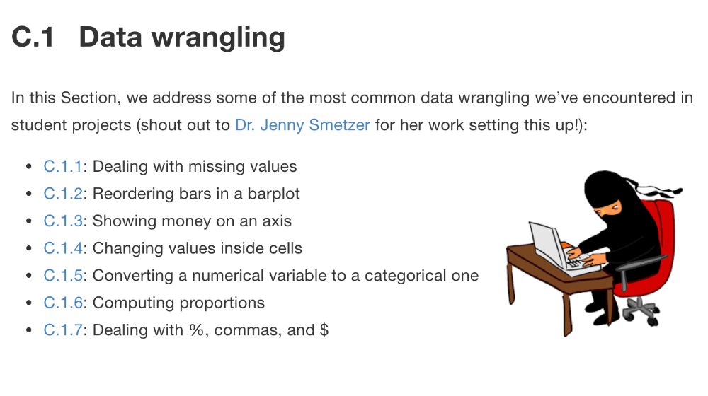

Term Project
Note to Instructors
This is an example of instructions for the term project. You see the source R Markdown file for this page here.
Instructions
Everything in this course builds up to the term group project, where there is only one learning goal: Engage in the data/science research pipeline in as faithful a manner as possible while maintaining a level suitable for novices.

In order to break down the task and minimize end-of-semester stress, you’ll be working on the project in five phases:
- Project groups: Form groups.
- Project data: Propose a data set for your project. This is the phase of the project that is the least straightforward. Thus, we recommend you start early and get help during office hours early and often.
- Project proposal: Ensure you can work with your data in R by performing an exploratory data analysis. This phase may require revisions to your original choice of data and visits to the Spinelli tutoring center for help with data wrangling.
- Project submission: Make an initial submission of your project. You will skip some of the sections for now and only complete them after we have covered inference for regression in class. After you submit your work, you will get instructor feedback.
- Project resubmission: Incorporate your instructor feedback from the project submission phase, complete the remaining sections, and resubmit your project. You will only be graded on your project resubmission.
We would like to thank Smith College students Alexis Cohen, Andrianne Dao, Isabel Gomez for allowing us to use their term project as an example.
1 Project Groups
- Form groups of 2-3 students.
- You must all be registered for the same lab section, because certain labs will be devoted to working on the project:
- All groups members are expected to contribute and you will all be held accountable for your contributions in peer evaluations.
- Choose a group name.
- Assign a “team/group leader” who will have a few extra administrative duties at each phase. Ex: making submissions, filling out Google Forms, etc.
- Only the team leader will then:
- Create a Slack message that includes all (1) your group members, (2) your instructor, and (3) your lab instructor. To ensure everyone is on the same page, please ask all project related questions in this message.
- Submit your group information using the “Project groups Google Form” on Moodle.
- If you are looking for a group to join, please fill out the “Project groups Google Form” on Moodle.
2 Project Data
This is the phase of the project that is the least straightforward. Thus, we recommend you start early and get help during office hours early and often.
- Get a sense for the requirements of this project phase by reading a possible example data proposal (Note that your data proposal will likely differ slightly from this one):
- Download the following
data.Rmdtemplate R Markdown file and fill it in.
2.1 Find data
Specifications
Find a data set that fits these specifications. Note your data may need a little wrangling from its original form.
- (If available) An identification variable that uniquely identifies each observation in each row.
- A numerical outcome variable \(y\). Note: binary outcomes variables with 0/1 values are not technically numerical.
- Two explanatory variables:
- A numerical explanatory variable \(x_1\). Note: this can be some notion of time.
- A categorical explanatory variable \(x_2\) that has between 3-5 levels. Note: If your data has more than 5 levels, they can be collapsed into 5 using data wrangling later.
- At least 50 observations/rows.
Possible sources
Here are some possible data sources:
- Best option: data from your own research or other courses! The more connected you feel with your data, the more motivated you will be for this project.
- Next best options: Online data repositories such as (but not limited to):
Note on data confidentiallity
If your data is not confidential or sensitive in nature, then publish your data as a CSV file on Google Sheets. That way your group can all access a single copy of your data on the web. If your data is confidential or sensitive in nature, do not publish it on the web, but rather submit the Excel or CSV file as well.
You can publish your data as a CSV file on Google Sheets by following the 6 steps in this Twitter thread:
- Go to File -> Publish to the web … pic.twitter.com/CeM3IIemFU — Albert Y. Kim (@rudeboybert) October 26, 2018
2.2 What to submit
Only the group leader will make a single submission on behalf of the whole group. They will submit:
- The
data.RmdR Markdown file - The
data.htmlHTML report file - Only if your data is confidential or sensitive in nature, submit your Excel or CSV file as well. Otherwise you should publish your data as a CSV file on Google Sheets as described above.
2.3 Hints
- Where is this heading?: For the next project phase (project proposal), you will be making a visualization like this one. If you can make a visualization like this one, then your data is set for the rest of the project.
- When you have questions:
- If possible, please ask questions that you think the entire class
would like to know the answer to in the
#projectchannel in Slack. - Ask more individual questions in the group DM that includes all group members + your instructor + your lab instructor.
- If possible, please ask questions that you think the entire class
would like to know the answer to in the
- Only minimal data wrangling using the
dplyrpackage is expected at this time; you will be doing more for the “project proposal” phase coming up. That being said, feel free to experiment!
3 Project Proposal
This phase may require revisions to your original choice of data and visits to the Spinelli tutoring center for help with data wrangling.
- Get a sense for the requirements of this project phase by reading a possible example project proposal (Note that your data proposal will likely differ slightly from this one):
- Download the following
proposal.Rmdtemplate R Markdown file and start filling it in.
3.1 Work on your proposal
Your data may require some wrangling to get it in the appropriate format. Given that this is not a class where data wrangling is a central focus, we suggest you check out the following resources:
- The Spinelli Center evening tutoring hours on Sun-Thurs 7-9pm. All student tutors there have taken SDS 192 Data Science and can thus help you get the data into the appropriate format.
- Be sure to look at our data wrangling “Tips & Tricks” ModernDive page written by Jenny Smetzer. It’s based on the seven most common data wrangling questions we’ve encountered from students while they were working on their term projects:

3.2 What to submit
Only the group leader will make a single submission on behalf of the whole group. They will submit:
- The
proposal.RmdR Markdown file - The
proposal.htmlHTML report file - Only if your data is confidential or sensitive in nature, submit your Excel or CSV file as well. Otherwise you should publish your data as a CSV file on Google Sheets as described above.
4 Project Submission
- Get a sense for the requirements of this project phase by reading
only the following sections of this possible project resubmission (Note that your data proposal
will likely differ slightly from this one):
- Section 1: Introduction
- Section 2: Exploratory data analysis
- Section 3 subsections 3.1, 3.2, and 3.3: Multiple linear regression:
Methods, Model Results, Interpreting the regression table.
- Download the following
project_submission_example.Rmdtemplate R Markdown file and start filling it in.
4.1 Complete your initial submission
- Complete the following sections of
project_submission.Rmd:- Section 1: Introduction
- Section 2: Exploratory data analysis
- Section 3 subsections 3.1, 3.2, and 3.3: Multiple linear regression: Methods, Model Results, Interpreting the regression table.
- Do not complete the following sections (you’ll be doing this at the
resubmission phase):
- Section 3 subsections 3.4, 3.5: Inference for multiple regression
- Section 4: Discussion. You will write this conclusion based on the results of sections 3.4 and 3.5.
4.2 What to submit
Only the group leader will make a single submission on behalf of the whole group. They will submit:
- The
project_submission.RmdR Markdown file with sections 1, 2, 3.1, 3.2, and 3.3 completed - The
project_submission.htmlHTML report file. - Only if your data is confidential or sensitive in nature, submit your Excel or CSV file as well. Otherwise you should publish your data as a CSV file on Google Sheets as described above.
5 Project Resubmission
Get a sense for the requirements of this project phase by re-reading all the sections of the possible project resubmission from the previous submission phase. In particular, read the following new sections:
- Sections 3.4, 3.5: Inference for multiple regression
- Section 4: Discussion.
5.1 Revise your initial submission
Using the same project_submission.Rmd file you submitted
for the project submission phase:
- Incorporate any feedback given to you from the project submission phase.
- Complete Sections 3.4 and 3.5: Inference for multiple regression
- Complete Section 4: Discussion. You will write this conclusion based on the results of sections 3.4 and 3.5.
5.2 What to submit
Only the group leader will make a single submission on behalf of the whole group. They will submit:
- The updated
project_submission.RmdR Markdown file. - The updated
project_submission.htmlHTML report file. - Only if your data is confidential or sensitive in nature, submit your Excel or CSV file as well. Otherwise you should publish your data as a CSV file on Google Sheets as described above.